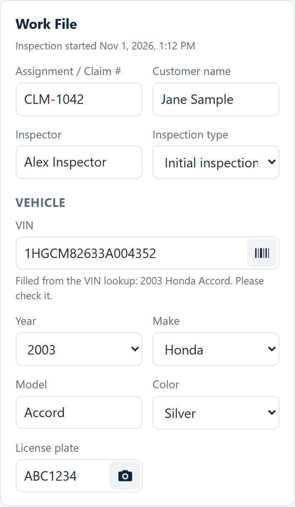
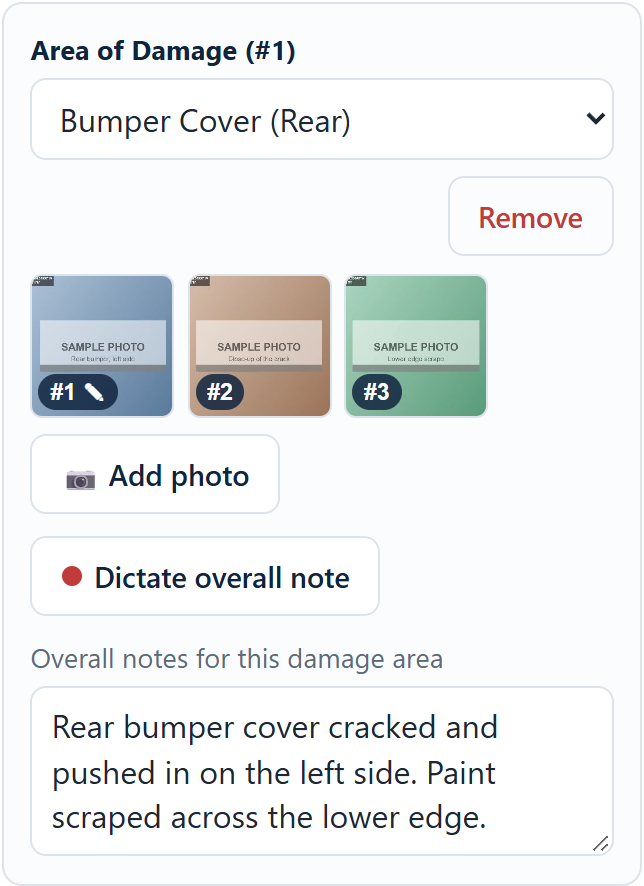
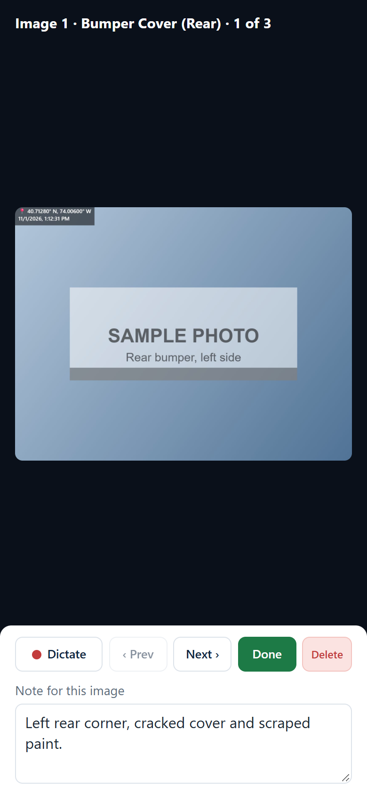
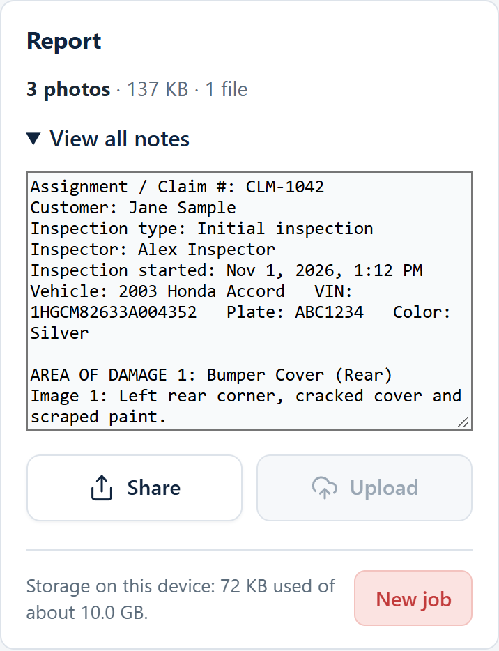

Photograph the damage, say what you see, and send the whole job in one tap.
Collision Voice runs on your iPhone like any other app. For each vehicle you enter a few details, take photos of the damage, and talk to describe what you see — the app types your words for you. When you're done, one button sends everything as a single file you can open on your computer.
Everything is saved on your phone as you go. If you close the app, lock the phone or lose signal, your job is still there when you come back. Nothing is cleared until you tap New job.
At the top of the screen, fill in the Assignment / Claim #, the Customer name and your name as Inspector. Choose the Inspection type (Initial, Supplement, Re-inspection, Final or Total loss).
The start time appears by itself as soon as you begin — you don't type it.
VIN: tap the small barcode icon in the VIN box and point the camera at the barcode (usually on the sticker inside the driver's door). It reads the barcode and fills in the VIN. Then the app looks up the year, make and model and fills those in too (this part needs internet).
License plate: tap the camera icon in the plate box, line the plate up inside the frame and hold steady for a moment. The plate is typed in for you.
Color: pick it from the list.
Always compare with the car. The scanners are very good but not perfect. If a scan won't work, tap Use a photo on the camera screen, or simply type it in.

Each Area of Damage is one place on the vehicle.
Every photo gets a permanent image number (#1, #2, #3…) and is stamped with the date, time and location in its corner. A pencil next to a number means that photo already has a note.
Need another place on the car? Tap + Add observation to start the next damage area. To drop one you don't need, tap Remove.

Tap any small photo to open it full screen. One row of buttons sits right under the photo, and the note is below it:
A fast way to work: take all your photos first. Then open the first photo, dictate, tap Next, dictate, and keep going down the line. Speak close to the phone and in a normal voice. Dictation understands English.

Scroll to the bottom, to the Report card. It tells you how many photos you have, how big the job is and how many files it will be.
Tap View all notes to see everything in one place: the job details, the vehicle, and every image number with its note. This is a good last check before you send.
Tap Share. Your phone's share sheet opens, and you choose where the job goes:
Everything — every photo (full size) and all the notes — goes as one file. A very large job is split into a few files; the Share button then says part 1 of 2, part 2 of 2… Tap Share once for each part.
The Upload button is greyed out. It's saved for a future feature.

Don't see OneDrive in the share sheet? Scroll the row of app icons at the top all the way to the right and tap More. Switch OneDrive on and tap the green + to put it in your Favorites so it stays on the list. Or choose Save to Files, then Browse → OneDrive.
Open the file from OneDrive (or your email). It is a zip file — right-click it and choose Extract All. Inside you'll find:
IMG-001.jpg, IMG-002.jpg… The numbers match the image numbers in your notes.notes.txt — all your notes with their image numbers. Open it and copy what you need into your estimate.inspection.json and manifest.json — the same information in a form other software can read (you can ignore these).The file name starts with the claim number, then the customer and the date and time, for example CLM-1042_Jane-Sample_2026-11-01_1259.zip, so one job never overwrites another.
When the job is shared, tap New job at the bottom right. This clears the photos and notes from the phone to make room. If you haven't shared the job since your last change, the app warns you twice before it deletes anything.
| What you see | What to try |
|---|---|
| Camera or microphone won't start | Go to your iPhone's Settings → Apps → Chrome (or Safari) and make sure Camera and Microphone are on. When the browser asks, tap Allow. Then reopen the app. |
| "Nothing heard — try again" | Hold the phone closer, speak a little longer, and try again. |
| "Transcription failed" | The very first time, the speech model needs internet to download. Connect and try again. |
| The VIN barcode won't scan | Improve the light, hold steady, and fill the frame with the barcode. Tap Use a photo to take a still picture, or type the VIN. Not every VIN sticker has a barcode — the dashboard VIN plate usually doesn't. |
| Year, make and model didn't fill in | You need internet for the lookup, and the VIN must have all 17 characters. You can always pick them from the lists. |
| The plate was read wrong | Check it against the car. Try again with the plate flat on and well lit, or type it. The app may show a second guess you can tap. |
| The phone or computer asks for camera, microphone or location again and again | The app now asks for the microphone and your location only once per visit. When your browser asks, choose Allow while visiting the site (in Chrome) — not "Allow this time". Also check Settings → Apps → Chrome (or Safari) on the iPhone and make sure Camera, Microphone and Location are switched on. In Safari you can also tap aA → Website Settings and set them to Allow. On a computer, open the app from its web address, not from a saved file. A browser decides how long it remembers a choice, and the app can't change that. |
| "Ready — tap Share again" | Your phone wanted a fresh tap. Just tap Share again. |
| OneDrive isn't in the share sheet | See the tip in step 6, or use Save to Files. |
| "Storage full" message | Share the job, then tap New job. |
Collision Voice Quick Start Guide · November 2026 · This guide describes the app as of this date; some features are still being added.